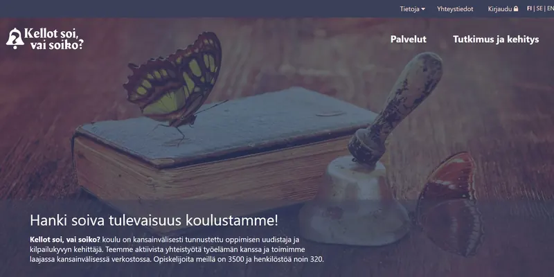
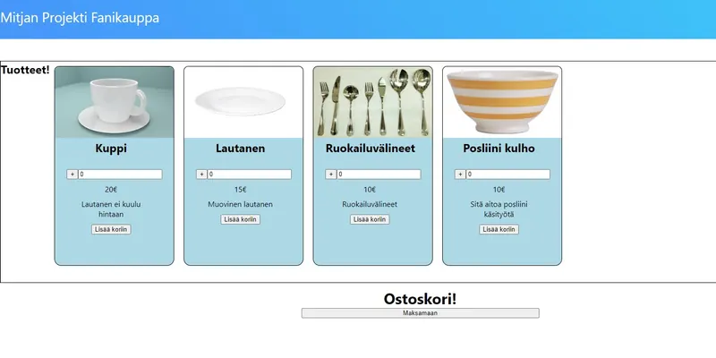
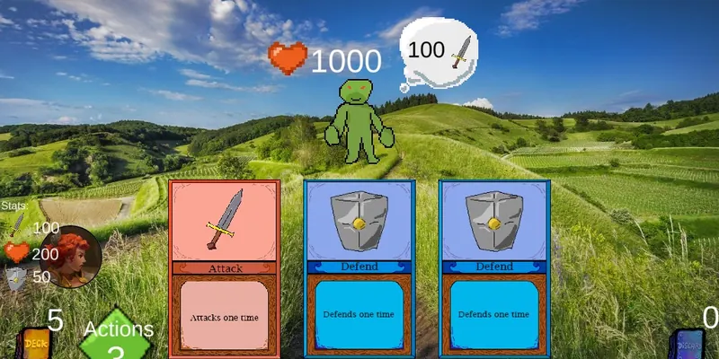

Connected today
$ whoami
- role
- Software developer and student
- location
- Tampere, Finland
- work
- Founder of Claylake Interactive
- studies
- TAMK, Bachelor's, Software Engineering, 3rd year
- status
- Open to part-time work alongside studies
$
/path
Present
Founder and lead developer, Claylake Interactive
Building TrinketBot.
In progress, 3rd year
Tampere University of Applied Sciences (TAMK)
Bachelor's studies, Communications and Technology, Software Engineering.
Feb to Mar 2023
Intern, Corpenet Oy, Tampere
Worked in a team on an internal statistics app: TypeScript, C#, React, React Native and Microsoft Azure.
2020 to 2023
Tredu, Tampere
Vocational qualification in software development. Graduated 2023.
Oct to Dec 2021
MKM Konekeskus, Valkeakoski
Servicing, maintaining and installing machines, and installing operating systems.
Open to part‑time work alongside studies.
Email is the best way to reach me.
mitja.savijarvi [at] gmail.com
/skills
Where a project shows a skill, it is named under the tag.
Front-end
- HTML Kellot soi, vai soiko?
- CSS Kellot soi, vai soiko?
- JavaScript Fanikauppa
- React Fanikauppa
- Bootstrap
Back-end
- PHP Päiväkirja
- Node.js / Express TrinketBot
- SQL Päiväkirja
Backed by TrinketBot and the 2026 course projects
- TypeScript
- Next.js
- PostgreSQL with Drizzle
- Prisma
- Docker
- CI/CD with GitHub Actions and GitLab CI
- Git / GitHub
- discord.js
- Automated testing with Vitest
Also worked with
- C#
- C++
- Python
- Lua
- Unity
- Blender
- MySQL
- PhpMyAdmin
- MongoDB
- Heroku
- Microsoft Azure
- Visual Studio
- Visual Studio Code
- Java (course level)
/trinketbot
Your stream goes live. Your Discord handles the rest.
TrinketBot is a Discord bot and web dashboard for streamers, VTubers and their communities: go-live alerts, moderation and safety, welcome and roles, leveling, events and giveaways, plus a separate chat bot for Twitch channels.
I build it alone, as owner and lead developer at Claylake Interactive. It connects five platforms: Discord, Twitch, Kick, YouTube and TikTok.
Open TrinketBotDashboard sign-in uses Discord.
The source is private. Code walkthrough on request.
Trinket, mascot art by MallieSprout.
Sample Streamer
Twitch
Live
# go-live Sample Server
M
Sample Mod
See you all on stream tonight.
TrinketBot BOT
@Live Alerts Sample Streamer is live on Twitch!
Sample Streamer
Sample stream title goes here
Playing Sample Game
Live
Watch on Twitch
DashboardSample server
Go-live alertsOn
Scam shieldOn
Welcome messagesOn
LevelingOff
/architecture
How it fits togetherSimplified
One shared upstream. One subscription or check per streamer, however many servers follow them.
- Node 22
- TypeScript
- discord.js 14
- Express 5
- PostgreSQL
- drizzle-orm
- Next.js 15
- React 19
- Tailwind
- Docker
Bot and HTTP API run in one process, shown by the dashed frame. Arrows are requests and events. Illustration of the design, not a live view.
/numbers
Code and tests, same scaleTypeScript lines
Application code Bot and dashboardabout 160,000
Automated tests Run in CIabout 135,000
050k100k150k
85%
The tests are about as large as the code they check.
As of 13 Oct 2026, measured from the repository. Blank lines and comments included.
TrinketBotReleased only
5Platforms
42Slash commands
Released commands only
13,000+Test cases
Automated, run in CI
3Security gates
Secret scan, dependency check and static analysis, plus a schema-drift check
/how-i-work
Three design decisions
A new feature ships dark.
Tests fail if any entry point could leak it early.
Deleting data is a database property.
Every per-server table cascades from one row, with a grace period the admin can skip.
One upstream subscription per streamer.
One Twitch or Kick subscription, or one YouTube check, per channel however many servers follow it.
Checked on every push
- Migrations are applied to an empty database in CI, with a schema-drift check.
- The dashboard is built in isolation, so it cannot import bot code.
- A secret scanner, a dependency-vulnerability gate and static analysis run on every push.
- Tests mock the database and Discord, and the test config refuses to load a real database URL.
How I work
Built with AI coding agents under a process I set: write the spec first, change in small steps, and let tests and CI decide what ships.
The source is private. Code walkthrough on request, by email.
/learning-curve
School work, shown small and honestly, oldest first. The last entry is where it led.
2020 to 2022
-
2020

Kellot soi, vai soiko?
Static HTML and CSS layout exercise: a fictional school's front page with a hover dropdown menu, flexbox sections and one responsive breakpoint. No JavaScript.
-
2021
Päiväkirja
Workout diary in PHP and MySQL with a hand-rolled MVC: registration, login, add, edit and delete entries. Source only, it needs a database.
What I would do now: prepared statements, output escaping, ownership checks and CSRF protection.
-
2021
Log inLantapahtuma / TreduLan
PHP MVC exercise: register, log in, add, edit and delete news posts. Source only, it needs a database.
-
2022

Fanikauppa
React 17 shop prototype, front end only: four hard-coded products, a cart, a checkout form and an on-page receipt. Nothing is sent anywhere.
-
2022

Card Game Adventure
Unity card battle game built in a school course: draw cards, spend actions on attack and defend cards to beat enemies. Playable in the browser.
2025 to 2026
-
2025
$ _Linux and C/C++ exercises
Exercise rounds in C and C++ on Linux: fork and exec, a small shell, and pthreads filling a 100-million-element array with 4 and 10 threads.
No public link
-
2026
webapidbTAMK web and API courses
Two Next.js and TypeScript apps using Prisma and two Express REST APIs, all on PostgreSQL, with Docker and GitLab CI.
Private repositories
-
2026
Jira app for a customer
School project for a customer: a Jira Cloud app that exports Roadmap epics to an Excel weekly timeline. Built with a collaborator. Automated tests included.
Private repository
-
2026